| Laser |
FREE. It is the startup weapon. |
Doesn't do much damage (at first). However, the next time you get a laser, your laser levels up and has slightly better stats. Max level 4. Only one level in Descent 3. |
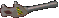
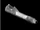
|
Descent 1, 2 & 3 |
Primary |
N/A |
| Super Laser |
Basically the normal laser with better stats. Boosts to level 5 or 6 in Descent 2. In Descent 3, Laser and Super Laser are separate. |
Slightly more energy consumption than the normal laser. |
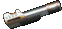
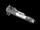
|
Descent 2 & 3 |
Primary |
N/A |
| Vulcan |
Fires shots rapidly. Does not use any energy. |
Requires separate ammo. Does only a medium amount of damage. |
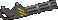
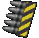
|
Descent 1 & 2 |
Primary |
20,000 rounds |
| Gauss |
Lots of damage per shot. Exploding bullets. No energy use. |
Requires separate ammo (same as Vulcan). If you don't stand back, you take fairly high damage. |

|
Descent 2 |
Primary |
20,000 rounds |
| Vauss |
Vulcan combined with Gauss. Very rapid with good damage. |
Uses its own type of ammo (Not Napalm or Mass Driver ammo). |
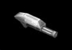 |
Descent 3 |
Primary |
12k (Phoenix), 15k (Pyro), 20k (Magnum) |
| Mass Driver |
Fires heavy shots with high damage. Hold fire to scope. |
Requires separate ammo (not vauss or napalm ammo). |
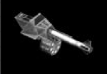 |
Descent 3 |
Primary |
25 rounds |
| Napalm |
Fires streams of flame. Inflicts damage over time. Multiple streams based on ship. |
Requires separate napalm ammo. |
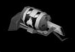 |
Descent 3 |
Primary |
120L (Phoenix), 150L (Pyro), 200L (Magnum) |
| Spreadfire |
A decent amount of damage. Shoots 3 vertical then 3 horizontal shots. |
Moderate energy consumption. |
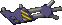 |
Descent 1 & 2 |
Primary |
N/A |
| Helix |
More impact area than spreadfire. Shoots 5 shots in rotating lines. |
High energy consumption. |
 |
Descent 2 |
Primary |
N/A |
| Microwave |
Stuns enemies until you stop shooting, holding them in place. |
Not a lot of damage itself. Decent energy consumption. |
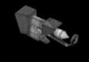 |
Descent 3 |
Primary |
N/A |
| Plasma |
Shoots bits of plasma very rapidly. |
Consumes energy fairly fast. |
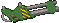
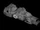
|
Descent 1, 2 & 3 |
Primary |
N/A |
| Phoenix |
Does a lot of damage. Ricochets off walls. Rapid like plasma. |
You can easily kill yourself with it. Very high energy consumption. |
 |
Descent 2 |
Primary |
N/A |
| EMD Gun |
Rapidly shoots many homing shots. |
Very high energy consumption. |
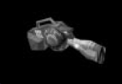 |
Descent 3 |
Primary |
N/A |
| Fusion |
High damage. Can be charged for more damage. |
High energy consumption and reload time. Overcharging damages your ship. |
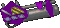
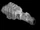
|
Descent 1, 2 & 3 |
Primary |
N/A |
| Omega |
Homing abilities. Steals enemy shields. Improved version in Descent 3. |
D2 version uses energy to recharge. D3 version uses energy extremely quickly. |
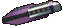
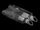
|
Descent 2 & 3 |
Primary |
N/A |
| Concussion Missile |
Moderately high damage. Moves fast in Descent 3. |
D1 & D2 versions move slowly. |
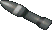
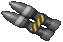
|
Descent 1, 2 & 3 |
Secondary |
20 (D1/D2). D3: 12 (Phoenix), 15 (Pyro), 20 (Magnum) |
| Frag Missile |
Explodes into pieces of shrapnel on impact. |
Stand back so you don't get hurt! |
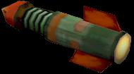 |
Descent 3 |
Secondary |
12 (Phoenix), 15 (Pyro), 20 (Magnum) |
| Homing Missile |
Homing ability. Moves fast in Descent 3. |
D1 & D2 versions move moderately slow. |
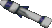
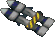
|
Descent 1, 2 & 3 |
Secondary |
10 (D1/D2). D3: 12 (Phoenix), 15 (Pyro), 20 (Magnum) |
| Napalm Rocket |
Drops flaming napalm on impact. |
Be careful not to burn yourself! |
|
Descent 3 |
Secondary |
5 (Phoenix), 10 (Pyro), 15 (Magnum) |
| Impact Mortar |
Big explosion and very high damage. |
Slow reload and movement. Stand back to avoid accidents. |
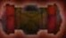 |
Descent 3 |
Secondary |
7 (Phoenix), 10 (Pyro), 15 (Magnum) |
| Smart Missile |
Creates explosion that blasts homing plasma bits. |
Make sure to stand back when firing. |
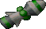 |
Descent 1, 2 & 3 |
Secondary |
5 max (D3: 3 Phoenix, 8 Magnum) |
| Mega Missile |
Homing missile with a large, extremely high damage explosion. |
Stand far back to avoid major accidents. |
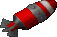 |
Descent 1, 2 & 3 |
Secondary |
5 (D1/D2). D3: 2 (Phoenix), 3 (Pyro), 5 (Magnum) |
| Flash Missile |
Blinding flash blinds enemies for a couple seconds. |
Stand back so you don't get blinded as well. |
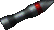
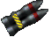
|
Descent 2 |
Secondary |
20 missiles |
| Guided Missile |
Can be manually steered after firing. Moderately high damage. |
Cannot be guided for longer than 30 seconds. |
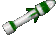
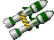
|
Descent 2 & 3 |
Secondary |
20 (Magnum/D1/D2), 10 (Phoenix), 15 (Pyro) |
| Cyclone Missile |
Blasts into 6 small homing missiles. |
Don't fire at point blank range. |
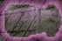 |
Descent 3 |
Secondary |
7 (Phoenix), 10 (Pyro), 15 (Magnum) |
| Mercury Missile |
Moves very fast. High firing rate. |
Only does as much damage as a concussion missile. |
 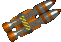
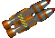
|
Descent 2 |
Secondary |
20 missiles |
| Earthshaker |
Many large explosions with extremely high damage. |
Stand very far back to avoid killing yourself. |
|
Descent 2 |
Secondary |
10 missiles |
| Black Shark |
Creates a mini black hole that sucks everything in before exploding. |
Stand back or you're toast. Invulnerability recommended. |
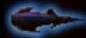 |
Descent 3 |
Secondary |
1 (Phoenix), 2 (Pyro), 3 (Magnum) |
| Proximity Bomb |
Deals moderately high damage when touched. |
For safety, don't touch once dropped. |
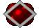
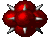
|
Descent 1 & 2 |
Counter/Sec. |
10 bombs |
| Smart Mine |
Explodes with homing bomblets when touched. |
For safety, don't touch once dropped. |
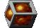
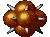
|
Descent 2 |
Counter/Sec. |
10 mines |
| Proximity Mine |
Proximity bomb with a bigger explosion and more damage. |
You can take more damage if you touch it. |
Basically looks like a proximity bomb. |
Descent 3 |
Countermeasure |
Unknown |
| Seeker Mine |
Like a proximity mine, but slowly moves toward enemies. |
You guessed it, don't touch. |
Looks like a smart mine. |
Descent 3 |
Countermeasure |
Unknown |
| Bouncing Betty |
Mine that bounces off walls all over the area. |
Don't get in its way. |
No Image |
Descent 3 |
Countermeasure |
Unknown |
| Gunboy |
Functions as a small laser turret shooting in all directions. |
Don't completely rely on it; enemies can shoot it down quickly. |
No Image |
Descent 3 |
Countermeasure |
Unknown |
| Chaff |
Confuses and distracts homing missiles. |
Not actually a weapon! Be careful not to bump into it. Hard to destroy. |
No Image |
Descent 3 |
Countermeasure |
Unknown |